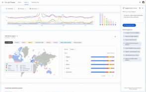

Google Trends déploie de nouvelles cartes interactives pour visualiser les tendances

🛒 En lien avec cet article
Publicité — Liens de partenariat Amazon : une commission peut être reversée, sans surcoût pour vous.
🔥 Top produits tech du moment
Publicité — Liens de partenariat Amazon : une commission peut être reversée, sans surcoût pour vous.
Les géants de la tech concentrent une part croissante de l'innovation mondiale. Leurs annonces ont un impact direct sur les utilisateurs, les développeurs et l'ensemble du secteur.
Ce qu'il faut retenir
La section "Explorer" de Google Trends s'offre une nouvelle fonctionnalité.
Google y déploie des cartes interactives pensées pour repérer plus vite les écarts d'intérêt d'une région à l'autre.
Pourquoi c'est important
Cette information conforte la position des grands groupes de la tech dans l'économie mondiale. Elle concerne directement les utilisateurs de technologies numériques et mérite d'être suivie de près dans les prochaines semaines. Google Trends déploie de nouvelles cartes interactives pour visualiser les tendances est ainsi un signal à prendre en compte pour comprendre les évolutions du secteur.
En résumé
Retenez l'essentiel : Google Trends déploie de nouvelles cartes interactives pour visualiser les tendances. Cette actualité a été rapportée par BDM Tech. Nous continuerons de suivre ce sujet et de vous tenir informés des prochaines évolutions.
Source : BDM Tech